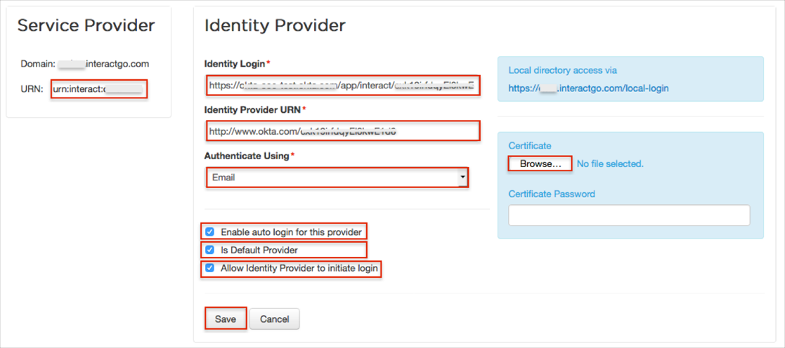

Log in to Interact as an administrator.
Navigate to Settings > Manage People > Manage SAML Authentication.
Click Add, then enter the following:
Identity Login: Copy and paste the following:
Sign into the Okta Admin Dashboard to generate this variable.Identity Provider URN: Copy and paste the following value, also make a copy of the value, you will need to enter it in Okta, later.
Sign in to the Okta Admin app to have this variable generated for you.Authenticate Using: Use the dropdown menu to select either Email or Username.
Certificate: Download and save the following as okta.cer, then use the Browse button to locate then upload it.
Sign into the Okta Admin Dashboard to generate this variable.Optional: Check the Enable auto login for this provider box. If this is checked, Interact will attempt to automatically try to login all users with this identity provider in the first instance.
After you have completed SAML configuration in Interact:
Navigate to Application Settings > Control Panel > Manage Application Variables > Interact Tool Bar.
Uncheck Enable Log Off.
Check the Is Default Provider box.
Check the Allow Identity Provider to initiate login box.
Click Save.

In Okta, select the General tab for the Interact app, then click Edit:
Enter the URN value into the corresponding field.
Click Save.
Done!
Notes:
SP-initiated flows and IdP-initiated flows are supported.
Just In Time (JIT) provisioning is not supported.
If you selected Enable auto login for this provider: Open your base URL.
If you did not select Enable auto login for this provider: Open this URL: [yourBaseUrl]/saml.